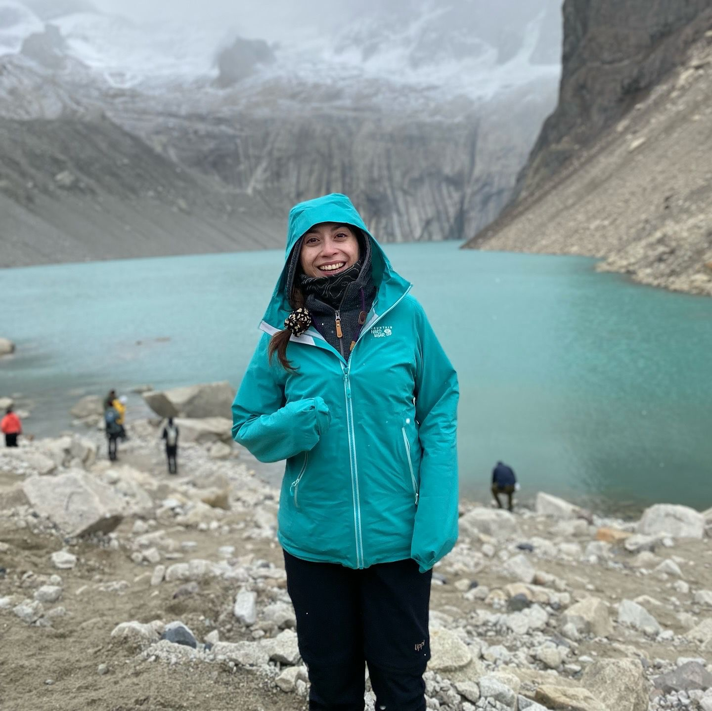

Hola, soy María Ignacia
Nutricionista titulada de la Pontificia Universidad Católica de Chile, especializada en nutrición materno infantil.
Acompaño a mujeres, niñas, niños y familias en distintas etapas de la vida, desde una mirada cercana y basada en evidencia.

Mi forma de acompañar
Elegí la nutrición materno infantil porque creo que los procesos relacionados con la alimentación merecen ser acompañados con información clara y cercana.
Mi enfoque se adapta a cada familia, respetando sus tiempos y su realidad.
En consulta realizo evaluación nutricional, educación alimentaria y seguimiento, adaptado a cada etapa de la vida.
Formación y especialización
Formación académica y actualización continua en nutrición materno infantil, embarazo, infancia y alimentación familiar.
Nutrición y Dietética
Pontificia Universidad Católica de Chile
Nuevas Tendencias Alimentarias
Nutrición y Embarazo
Enfoque multidisciplinario
Avances en nutrición y obesidad
Manejo integral de alergias alimentarias en pediatría
La nutrición no ocurre de forma aislada, sino dentro de la vida cotidiana de cada familia.
Más allá de la consulta
La forma en que vivo y me relaciono con la alimentación influye directamente en cómo acompaño a mis pacientes.
¿Qué puedes esperar de mi atención?
Busco que la nutrición sea una herramienta útil, no una carga más.
Cada proceso es único y merece ser acompañado con respeto.
Estoy aquí para acompañarte en tu proceso
Si sientes que este enfoque conecta contigo, puedes escribirme para resolver tus dudas o coordinar tu atención.
Contacto